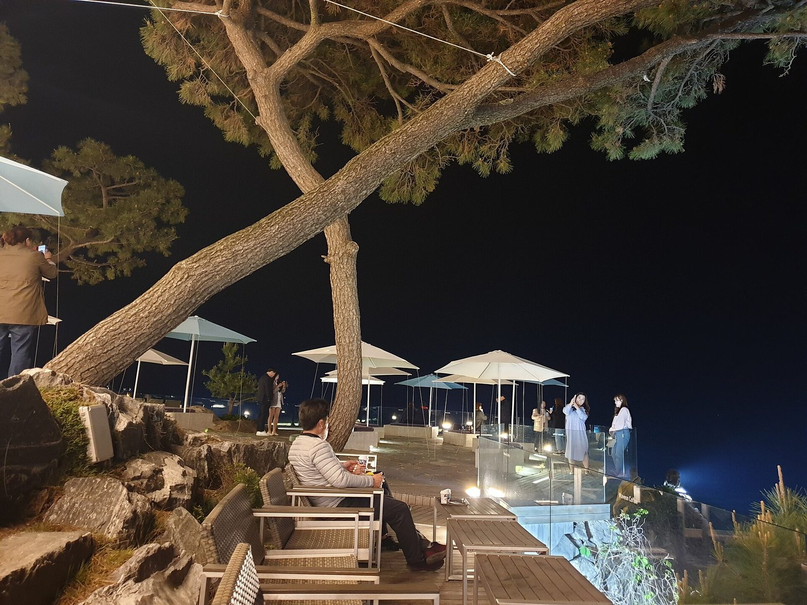

Busan · Cafe
Waveon Coffee: A Seaside Café in Gijang
By Jungsuk Kim, Korea Plainly · Published · Updated

Photo: Choi2451, CC BY-SA 3.0, via Wikimedia Commons
At a glance: Waveon Coffee is a striking seaside café in Gijang, worth visiting for its open sea views, coffee, and bakery. Its distinctive concrete architecture and varied seating make it a relaxing stop on Busan’s coast.
Visiting Waveon Coffee
- Region
- Busan
- Address
- 286 Haemaji-ro, Gijang, Busan
- Google rating
- 4.2/5 from 6,302 reviews (October 2026)
Opening hours, prices and closures change. Check the map before you go.
What Waveon Coffee is
Waveon Coffee is a large café on Haemaji-ro in Gijang, a coastal district in the northeastern part of Busan. Its setting is a big part of the appeal: instead of looking out onto busy city streets, you can settle in with a view of the sea. The café’s architecture is also memorable, with an exposed-concrete exterior that gives the building a clean, modern character.
Inside, the café is arranged across two floors, with additional seating on the rooftop. That range of spaces makes it suitable for different kinds of visits: you might stop for a coffee and a short look at the coast, or take your time over a drink and something from the bakery. The sea-facing setting is the main reason to make the trip, while the building and choice of places to sit give you more to explore once you arrive.
Waveon Coffee has a Google rating of 4.2 from 6,302 reviews. It is a popular destination, so expect other visitors, especially when the weather is pleasant and people are looking for a café with a view.
What to see, do, and order
Start by taking in the building and its position beside the coast. The exposed concrete creates a striking contrast with the open water, and the different levels offer a chance to enjoy the setting from more than one angle. If the rooftop is open for seating when you visit, it can be a pleasant place to pause outdoors; bring a layer if the sea breeze feels cool.
For drinks, the café offers brewed coffee, espresso-based drinks, and signature beverages. If you enjoy tasting coffee, ask about the brewed options; if you prefer something familiar, an espresso-based drink is an easy choice. There is also a bakery, so you can pair a drink with a baked treat. Menu choices can change, so choose from what is available on the day rather than planning around a particular item.
Once you have ordered, take a moment to look around before settling in. A seat by a window or on an outdoor level can make the ocean the focus of your visit, while an indoor table may be more comfortable in windy or rainy weather. Be considerate of other guests when taking photos, particularly in shared seating areas.
How to plan your visit
Waveon Coffee is at 286 Haemaji-ro, Gijang, Busan. Since it is in coastal Gijang rather than the city centre, plan it as a destination in its own right or as part of a day exploring this side of Busan. Use the address to check your route before setting out, and allow extra flexibility if you are relying on public transport or connecting several stops.
As a rough guide, allow around one to two hours for a relaxed café visit. That gives you time to order, enjoy a drink and bakery item, and look around the different seating areas without needing to hurry. A shorter stop works if you mainly want coffee and a sea view, but the setting is best enjoyed at an unhurried pace.
Daytime is a good choice if you want to see the water clearly and appreciate the coastal scenery. Later in the day can bring a softer atmosphere, though the view and light depend on the weather. If you want to visit at a particular time, check the forecast and choose a clear day where possible.
One well-known nearby stop to consider is Haedong Yonggungsa, a seaside temple in Gijang. Combining the temple with a café visit makes a natural coastal outing: explore the temple grounds, then take a break at Waveon Coffee. Leave enough time for both stops, and check your route between them when planning the day.
Good to know
The café is popular, and busy periods can mean more activity around the seating areas. If you prefer a calmer visit, consider going outside the busiest meal and weekend periods. Outdoor seating is especially weather-dependent, so have an indoor option in mind.
At Korean cafés, you generally order before choosing a seat, but follow the signs and staff directions at the entrance. If you are visiting with a group, it can help to find a table after ordering rather than holding several seats while others are in line. Check current hours and prices on Naver Map before you go.
For navigation, enter “Waveon Coffee” or the full address, 286 Haemaji-ro, Gijang, Busan. The café’s official website is waveoncoffee.com.
FAQ
Is Waveon Coffee worth visiting for the view?
Yes. Its coastal setting and sea-facing spaces are central to the experience, alongside the coffee and bakery.
What can I order at Waveon Coffee?
The café serves brewed coffee, espresso-based drinks, signature beverages, and bakery items. The selection may vary, so check the menu when you arrive.
What can I combine with a visit?
Haedong Yonggungsa is a well-known coastal temple in Gijang and makes a good pairing for a day exploring this part of Busan.